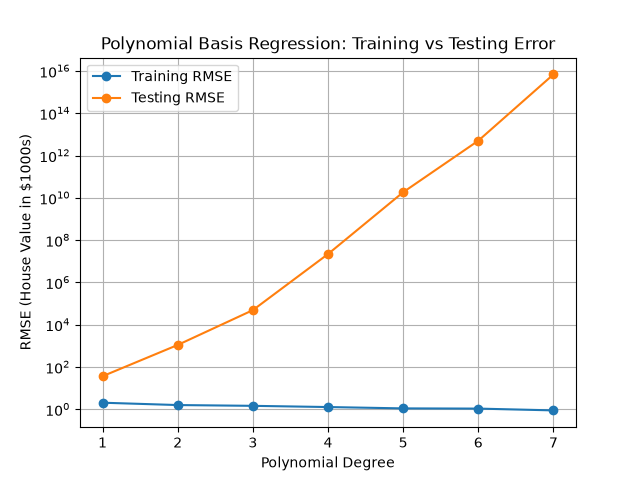
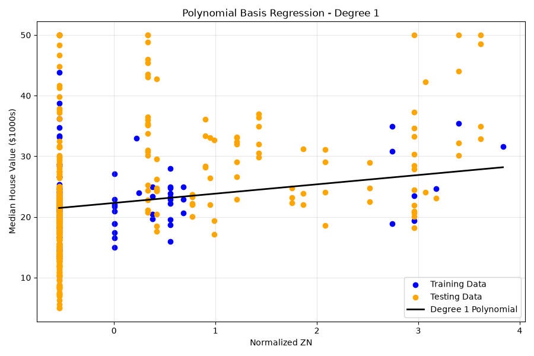
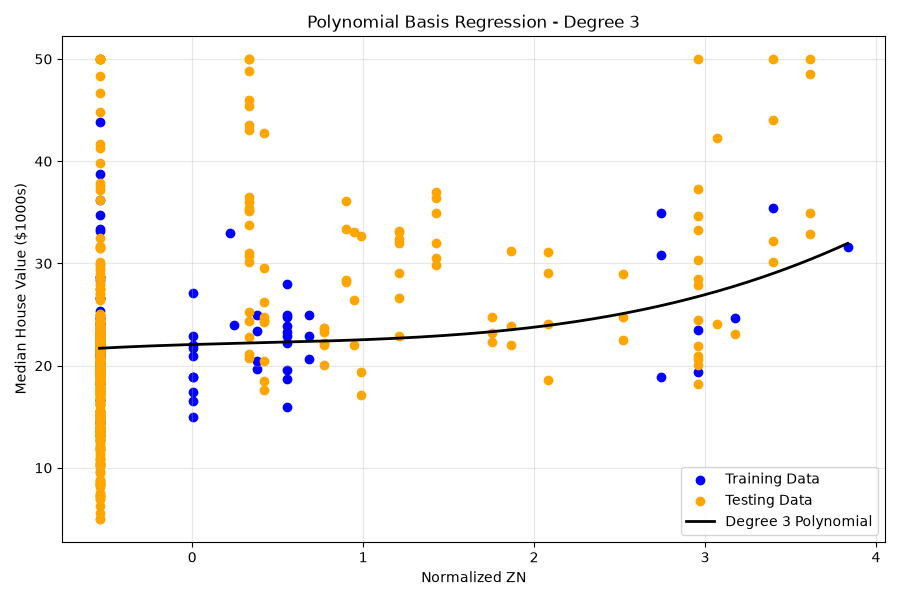
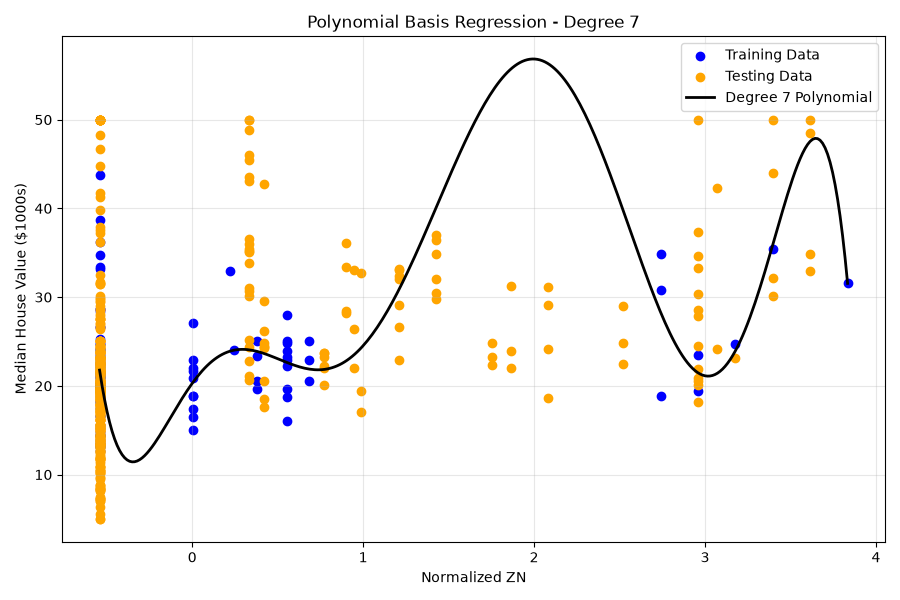
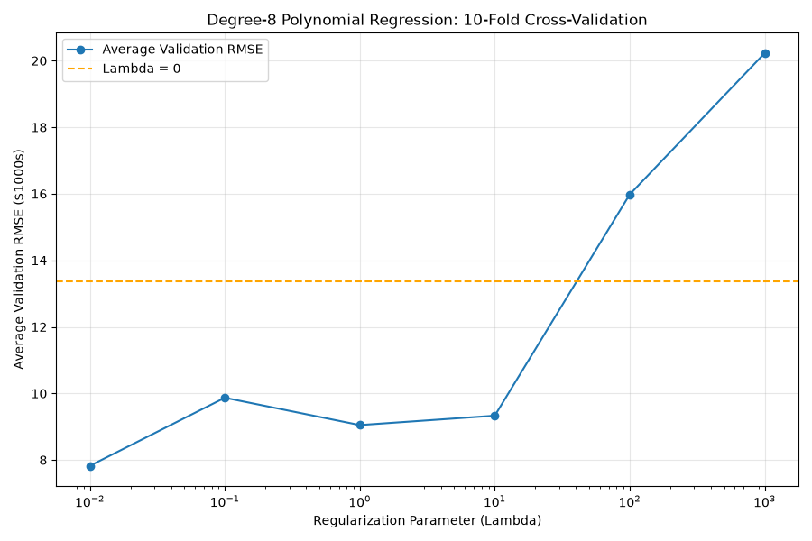
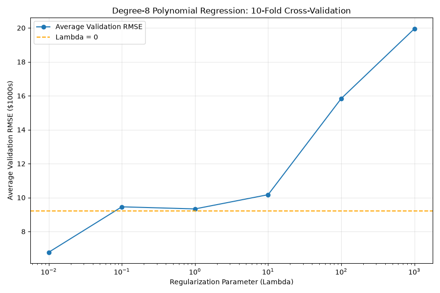
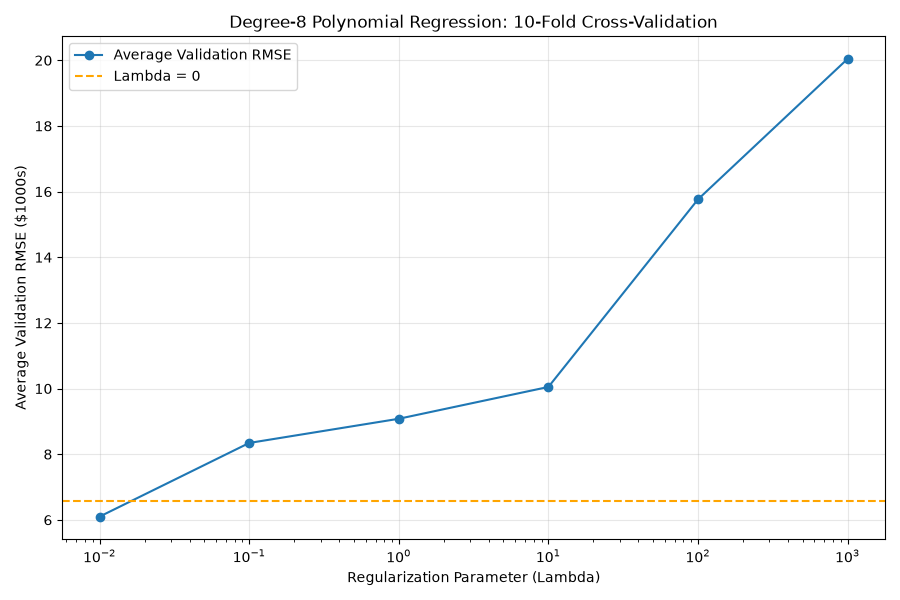
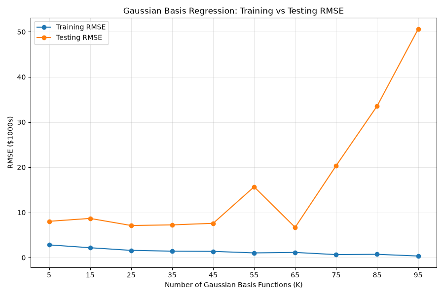
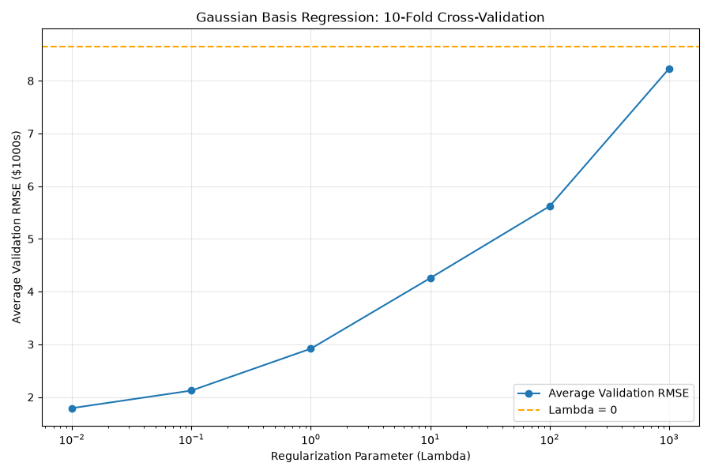

Assignment 2: Linear Regression
This assignment implements linear basis function regression with polynomial and Gaussian basis functions to predict the median house value (MEDV, in $1000s) of a town from 13 features describing it, using the Boston Housing dataset. The first 100 observations are used as training data and the remaining 406 observations are used as testing data.
General Procedure
- Split the data into training (first 100 observations) and testing (remaining observations) sets.
- Normalize each feature using the mean and standard deviation of the training observations, and apply the same values to the testing data. CHAS is constant (0) in the training data, so its standard deviation was set to 1 to avoid dividing by zero.
- Build the design matrix Φ by applying the basis functions to each observation, with a column of ones for the bias weight.
- Estimate the weights from the training data using least squares, or L2-regularized least squares: w = (ΦTΦ + λI)-1ΦTy
- Predict MEDV for the training and testing data using the same weights and calculate the RMS error: RMSE = √[ (1/N) Σ (yn - ŷn)² ]
Part 1: Polynomial Basis Functions
The polynomial basis uses only monomials of a single variable, with no cross-terms:
φ(x) = [1, x1, x1², …, x1d, x2, x2², …, x13d]a) Training and Testing Error vs. Polynomial Degree

| Degree | Training RMSE | Testing RMSE |
|---|---|---|
| 1 | 2.037 | 36.445 |
| 2 | 1.578 | 1097.188 |
| 3 | 1.449 | 48672.818 |
| 4 | 1.270 | 21859310.196 |
| 5 | 1.097 | 18358040619.662 |
| 6 | 1.073 | 5024088560655.005 |
| 7 | 0.881 | 6879332102627000.000 |
Looking at the results, the training RMSE decreases as the polynomial degree increases. This makes sense because adding more basis functions allows the model to fit the training observations more closely. However, the testing RMSE increases significantly with each degree, suggesting that the higher-degree models are overfitting the training data rather than learning a relationship that generalizes well.
Even for degree 1, the testing error is much higher than the training error. This could be because the first 100 observations aren't representative of the entire dataset, meaning that the model encounters values in the testing data that fall outside the training range. Since higher-degree polynomial terms can grow very quickly outside this range, the predictions become increasingly extreme. Based on these results, degree 1 appears to generalize the best out of the degrees tested.
b) Degree-1 Weights
| Weight | Feature | Value |
|---|---|---|
| w0 | Bias | 22.3090 |
| w1 | CRIM | -1.3380 |
| w2 | ZN | 0.1230 |
| w3 | INDUS | -0.5311 |
| w4 | CHAS | 0.0000 |
| w5 | NOX | 1.0027 |
| w6 | RM | 4.1956 |
| w7 | AGE | -2.1663 |
| w8 | DIS | 0.0107 |
| w9 | RAD | -0.1938 |
| w10 | TAX | -0.3486 |
| w11 | PTRATIO | 0.2613 |
| w12 | B | 0.1811 |
| w13 | LSTAT | 0.1488 |
For the degree-1 polynomial regression, the sixth feature, RM (average number of rooms per dwelling), had a weight of 4.1956, while the eighth feature, DIS (weighted distance to employment centres), had a weight of 0.0107. Since the input features were normalized, these weights represent how much the predicted median house value changes for a one-standard-deviation increase in that feature, assuming the other features stay constant.
The positive weight for RM makes sense because I would expect houses with more rooms to generally have higher values. However, the weight for DIS is almost zero, suggesting that distance to employment centres doesn't have much of an independent linear relationship with house value in this model. I would have expected a greater distance to potentially lower house values because of accessibility, but other neighbourhood characteristics could also influence this relationship.
The CHAS weight is zero because all 100 training observations have a CHAS value of zero, so the model can't learn a relationship for that feature. The bias weight is 22.31, which corresponds to the average median house value in the training data because the input features were normalized.
c) One-Dimensional Polynomial Regression (ZN)
To visualize the regression, polynomial regression was repeated using only the second feature, ZN (proportion of residential land zoned for large lots). The plots show the training data, testing data and learned polynomial for degrees 1, 3 and 7.

Degree 1: The degree-1 polynomial shows a weak positive linear relationship between ZN and median house value. However, looking at the graph, both the training and testing observations are spread quite far from the fitted line, suggesting that a linear relationship isn't enough to explain the variation in house values. Most observations also have a ZN value of zero, but their house values range from around 5 to 50. This makes it difficult for a model using only ZN to accurately predict house values. Although the degree-1 model is relatively stable, it may be underfitting the data.

Degree 3: Increasing the polynomial degree to 3 allows the model to capture a more complex relationship between ZN and median house value. Looking at the graph, the curve stays relatively flat for smaller ZN values before increasing at higher values. However, the overall fit doesn't seem significantly better than degree 1. Since ZN only has 12 distinct values in the training data, the additional curvature doesn't appear to help explain much of the variation in the testing observations.

Degree 7: The degree-7 polynomial shows what happens when we increase the model's complexity too much. Although the curve fits relatively close to the training observations, it starts oscillating significantly between the groups of data points. For example, the predicted house value drops to around 11 just above ZN = 0 before increasing to approximately 57 in a region where there aren't any training observations. These predictions don't seem reasonable compared to the testing data. This suggests that the model is overfitting and becomes particularly unreliable when making predictions in regions where it hasn't been trained.
d) L2-Regularized Regression with Cross-Validation
A degree-8 polynomial was fit to ZN using the first 100 observations, with each
λ in {0, 0.01, 0.1, 1, 10, 100, 1000}. 10-fold cross-validation with shuffled
folds was used to select λ, normalizing the feature within each fold using only
that fold's training observations. To check reproducibility, the cross-validation was
repeated with three different random_state values. Since λ = 0 cannot
appear on a logarithmic axis, it is shown as a dashed horizontal line.



| λ | random_state = 0 | random_state = 1 | random_state = 2 |
|---|---|---|---|
| 0 | 13.3649 | 9.2249 | 6.5718 |
| 0.01 | 7.8242 | 6.7765 | 6.0993 |
| 0.1 | 9.8699 | 9.4566 | 8.3428 |
| 1 | 9.0486 | 9.3328 | 9.0799 |
| 10 | 9.3308 | 10.1711 | 10.0489 |
| 100 | 15.9802 | 15.8400 | 15.7632 |
| 1000 | 20.2283 | 19.9524 | 20.0427 |
Looking at the 10-fold cross-validation results, λ = 0.01 produced the lowest average validation RMSE across all three `random_state` values. It was also the only regularization value that consistently performed better than the unregularized model. For example, with `random_state = 0`, the validation RMSE decreased from 13.36 when λ = 0 to 7.82 when λ = 0.01.
This suggests that adding a small amount of L2 regularization helps prevent overfitting by limiting how large the model's weights can become, allowing it to generalize better to unseen data. However, as λ increases beyond 0.01, the validation error generally increases, suggesting that too much regularization restricts the model's ability to fit the data. At λ = 100 and 1000, the model actually performs worse than when no regularization is applied.
I also tested different `random_state` values to see whether the results were reproducible. Although the actual validation RMSE values changed depending on how the observations were divided into folds, λ = 0.01 consistently produced the lowest error. Based on these results, I selected λ = 0.01 as the best regularization parameter.
Part 2: Gaussian Basis Functions
The Gaussian basis functions use all 13 normalized features, with centres μj chosen as randomly selected training observations:
Φj(x) = exp(−(‖x − μj‖)2 / (2s2))The width s was set to the median pairwise distance between the normalized training observations.
e) Training and Testing Error vs. Number of Basis Functions

| K | Training RMSE | Testing RMSE |
|---|---|---|
| 5 | 2.810 | 8.032 |
| 15 | 2.179 | 8.672 |
| 25 | 1.594 | 7.101 |
| 35 | 1.421 | 7.237 |
| 45 | 1.371 | 7.588 |
| 55 | 1.035 | 15.668 |
| 65 | 1.138 | 6.692 |
| 75 | 0.657 | 20.354 |
| 85 | 0.722 | 33.575 |
| 95 | 0.344 | 50.597 |
Looking at the graph, the training RMSE generally decreases as the number of Gaussian basis functions increases. This makes sense because adding more basis functions gives the model more flexibility to fit the training observations. However, the testing RMSE doesn't follow the same trend. For smaller values of K, the testing error stays relatively consistent, but it begins fluctuating and increasing significantly as K gets larger.
At K = 95, the training RMSE is almost zero, while the testing RMSE increases to approximately 50.6. This suggests that the model is severely overfitting the training data and isn't generalizing well to unseen observations. Some of the fluctuations could also be caused by the random selection of Gaussian centres for each K, since changing the centres can affect the fitted model. This could explain why the training RMSE increases slightly at K = 65 and 85, even though more basis functions are being used.
Compared to polynomial regression in Part 1(a), the Gaussian basis functions produce much smaller testing errors. I think this is partly because Gaussian functions decrease toward zero as observations move farther away from their centres, whereas higher-degree polynomial terms can grow extremely large outside the training range. Overall, increasing the number of Gaussian basis functions doesn't necessarily mean the model will make better predictions.
f) L2-Regularized Regression with Cross-Validation
A Gaussian basis model with 90 basis functions was fit using all features of the first 100 observations, with each λ in {0, 0.01, 0.1, 1, 10, 100, 1000}. 10-fold cross-validation (random_state = 1) was used to select λ. The unregularized result (λ = 0) is shown as a dashed horizontal line.

| λ | Average Validation RMSE |
|---|---|
| 0 | 8.6509 |
| 0.01 | 1.7902 |
| 0.1 | 2.1231 |
| 1 | 2.9181 |
| 10 | 4.2582 |
| 100 | 5.6229 |
| 1000 | 8.2363 |
Looking at the 10-fold cross-validation results, λ = 0.01 produced the lowest average validation RMSE of approximately 1.79, compared to 8.65 when no regularization was applied. This suggests that adding a small amount of L2 regularization helps the Gaussian basis regression model generalize better by preventing the weights from becoming too large.
Since we're using 90 Gaussian basis functions and each training fold only contains 90 observations, the model has more weights than training observations. Without regularization, this gives the model enough flexibility to fit the training data very closely, which could explain why its validation error is much higher.
As λ increases beyond 0.01, the validation RMSE also increases, suggesting that too much regularization limits the model's ability to capture relationships in the data. This is consistent with what we observed in Part 2(e), where increasing the number of basis functions eventually caused the testing error to increase significantly. Based on these results, I selected λ = 0.01 as the best regularization parameter among those tested.
Source Code
The Python implementations used for each part are linked below.